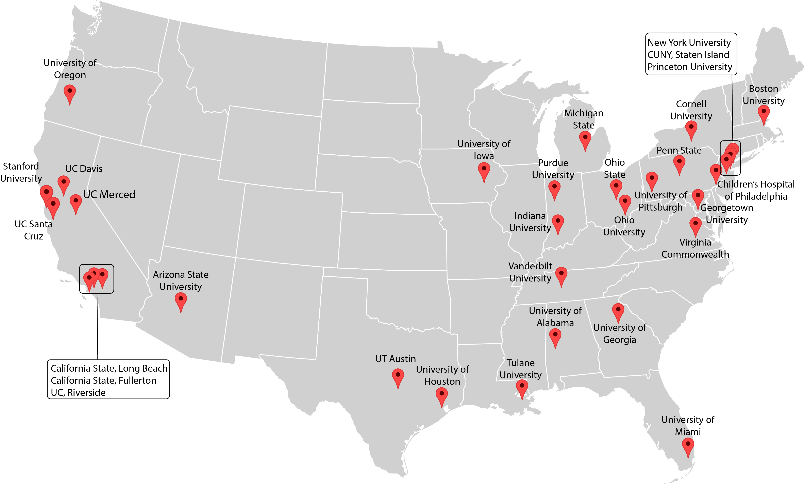

Una hora en la vida…
Un estudio de lo que hacen los bebes diariamente en su hogar
¡Somos investigadores universitarios conduciendo el primer estudio en gran escala sobre lo que los bebes hacen en su hogar! Estamos invitando a participar en este innovador estudio a mil familias con bebes (de hasta 2 años de edad) a través de Norte América. Investigadores expertos visitarán su hogar y grabarán un pedacito de su vida diaria. Usted ayudará a que los científicos entiendan de mejor manera como los niños aprenden en su hogar.
Que pueden esperar las familias
Una visita a su hogar por un investigador (2-3 horas de duración)
Usted y su hijo/a realizaran sus actividades rutinarias
El investigador le hará algunas preguntas sobre su casa, hijo/a, y familia
El investigador grabará toda la visita en video
Los videos se colocarán en una video biblioteca segura a la cual solo otros investigadores tendrán acceso
Usted recibirá una tarjeta de regalo valorada en $50 por su participación.
Regístrese y sea parte de algo grande
¡Nos encantaría que usted y su hijo/a participen! Si está interesado/a, por favor busque la universidad más cercana a usted e inscríbase usando el formulario debajo del mapa.

Apoyo
Este proyecto tiene apoyo vía fondos otorgados por la Oficina del Director, Institutos Nacionales de Salud (NIH), Instituto Nacional de Salud Infantil y Desarrollo Humano Eunice Kennedy Shriver (NICHD), Instituto Nacional de Salud Mental (NIMH), y el Instituto Nacional sobre el Abuso de Drogas bajo R01HD094830-01, LEGO Foundation, y la Fundacion Alfred P. Sloan.